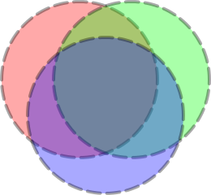

5.3.2
4 Floating-Point Bitmaps
| (require images/flomap) |
The images/flomap module provides the struct type flomap, whose instances represent floating-point bitmaps with any number of color components. It also provides purely functional operations on flomaps for compositing, pointwise floating-point math, blur, gradient calculation, arbitrary spatial transforms (such as rotation), and conversion to and from bitmap% instances.
This is a Typed Racket module. Its exports can generally be used from untyped code with negligible performance loss over typed code. Exceptions are documented in bold text. Most exceptions are macros used to inline floating-point operations.
The following flomap fm is used in various examples:
> (define fm (draw-flomap (λ (fm-dc) (send fm-dc set-alpha 0) (send fm-dc set-background "black") (send fm-dc clear) (send fm-dc set-alpha 1/3) (send fm-dc translate 2 2) (send fm-dc set-pen "black" 4 'long-dash) (send fm-dc set-brush "red" 'solid) (send fm-dc draw-ellipse 0 0 192 192) (send fm-dc set-brush "green" 'solid) (send fm-dc draw-ellipse 64 0 192 192) (send fm-dc set-brush "blue" 'solid) (send fm-dc draw-ellipse 32 44 192 192)) 260 240))
> (flomap->bitmap fm) 
It is typical to use flomap->bitmap to visualize a flomap at the REPL.
Contents: